CODING AGENTS AS PIXEL WORLD MODELS
traex/GPT-5.6-Sol · 0168
点击播放 · 原生 RGB 像素
逐轮保存的候选
回放视频、检查图与代码变化。
每份候选均可单独播放。实际图片检查记录在下方工具轨迹中。
候选 01播放与检查图
点击播放 · 原生 RGB 像素
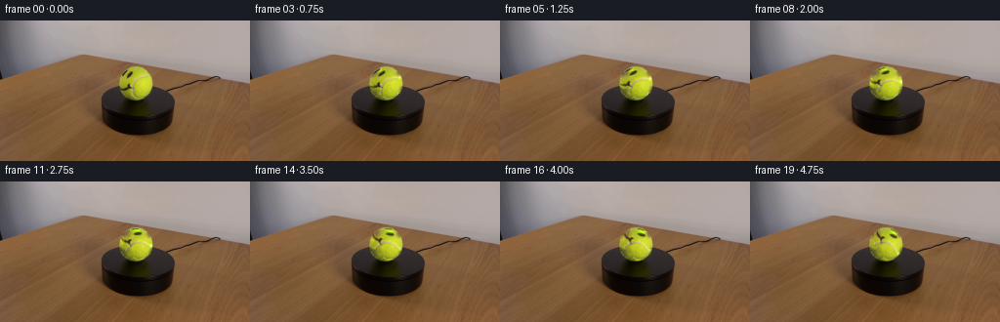
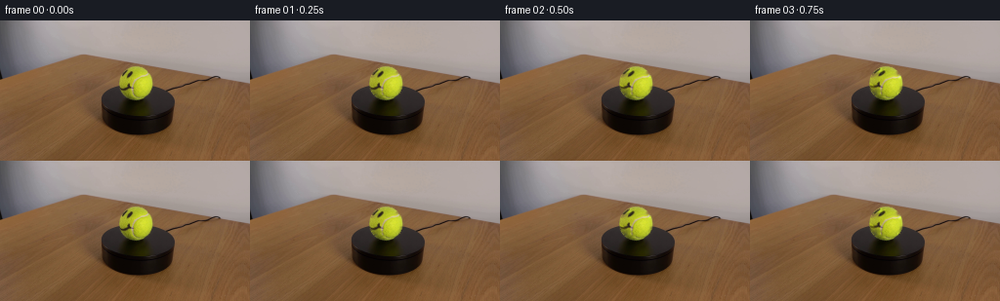
展开代码变化
--- 上一保存版本
+++ 本次保存版本
@@ -0,0 +1,77 @@
+from pathlib import Path
+import numpy as np
+import cv2
+from PIL import Image
+import artifact_io
+
+CASE_DIR = Path(__file__).resolve().parent
+
+
+def soft_circle(h, w, cx, cy, radius, feather=1.0):
+ yy, xx = np.mgrid[:h, :w]
+ d = np.sqrt((xx-cx)**2 + (yy-cy)**2)
+ return np.clip((radius + feather - d) / (2*feather), 0.0, 1.0).astype(np.float32)
+
+
+def generate():
+ source = np.asarray(Image.open(CASE_DIR / 'first_frame.png').convert('RGB'), dtype=np.uint8)
+ h, w = source.shape[:2]
+ cx, cy, radius = 139.2, 64.2, 18.25
+ yy, xx = np.mgrid[:h, :w]
+ dist = np.sqrt((xx-cx)**2 + (yy-cy)**2)
+ inner = dist < 16.8
+
+ # Isolate painted smile and the pale tennis-ball seam from the yellow felt.
+ hsv = cv2.cvtColor(source, cv2.COLOR_RGB2HSV)
+ H, S, V = hsv[...,0], hsv[...,1], hsv[...,2]
+ mark = inner & (
+ ((V < 133) & (yy < 75)) | # face ink
+ ((S < 108) & (yy < 80)) | # pale/grey seam
+ ((H < 25) & (yy < 77)) | # brown-black painted edges
+ ((H > 40) & (yy < 80)) # tiny purple seam edge
+ )
+ # Suppress false positives in the naturally dim, lower rim.
+ mark &= ~((yy > 74) & (V < 100))
+ m = (mark.astype(np.uint8) * 255)
+ m = cv2.dilate(m, np.ones((3,3), np.uint8), iterations=1)
+ m = cv2.GaussianBlur(m, (3,3), 0.55)
+ m = np.where(dist < 17.0, m, 0).astype(np.uint8)
+
+ # Inpainting yields the same fixed lighting and felt shading without markings.
+ base_bgr = cv2.inpaint(cv2.cvtColor(source, cv2.COLOR_RGB2BGR), m, 4.2, cv2.INPAINT_TELEA)
+ base = cv2.cvtColor(base_bgr, cv2.COLOR_BGR2RGB).astype(np.float32)
+ src = source.astype(np.float32)
+ alpha_detail = (m.astype(np.float32) / 255.0)
+ alpha_detail = cv2.GaussianBlur(alpha_detail, (0,0), 0.55)
+ # Exact residual over the repaired felt. It includes antialiased edges of the ink/seam.
+ residual = (src - base) * alpha_detail[...,None]
+ residual_alpha = alpha_detail
+
+ ball_alpha = soft_circle(h, w, cx, cy, radius-0.25, 0.8)
+ frames = [source.copy()]
+ for i in range(1, 20):
+ # 4 degrees per quarter-second: slow, steady clockwise rotation.
+ angle = 4.0 * i
+ M = cv2.getRotationMatrix2D((cx, cy), -angle, 1.0) # OpenCV positive is CCW visually
+ rd = cv2.warpAffine(residual, M, (w,h), flags=cv2.INTER_CUBIC,
+ borderMode=cv2.BORDER_CONSTANT, borderValue=0)
+ ra = cv2.warpAffine(residual_alpha, M, (w,h), flags=cv2.INTER_CUBIC,
+ borderMode=cv2.BORDER_CONSTANT, borderValue=0)
+ ra = np.clip(ra, 0, 1) * ball_alpha
+
+ # Fixed illumination, moving painted/fabric details. Residual compositing avoids
+ # changing the ball silhouette or the locked-off background.
+ rendered = base + rd
+ rendered = np.clip(rendered, 0, 255)
+ # Keep a narrow original fuzzy perimeter for natural subpixel hairs.
+ comp_alpha = np.clip(ball_alpha * (0.94 + 0.06*ra), 0, 1)[...,None]
+ out = src * (1.0-comp_alpha) + rendered * comp_alpha
+ frames.append(np.clip(np.rint(out), 0, 255).astype(np.uint8))
+
+ frames = np.stack(frames, axis=0)
+ frames[0] = source
+ return frames
+
+
+if __name__ == '__main__':
+ artifact_io.save(generate(), CASE_DIR)
候选 02播放与检查图
点击播放 · 原生 RGB 像素

展开代码变化
--- 上一保存版本
+++ 本次保存版本
@@ -1,77 +1,83 @@
from pathlib import Path
import numpy as np
+from PIL import Image
import cv2
-from PIL import Image
+from scipy.ndimage import map_coordinates
import artifact_io
CASE_DIR = Path(__file__).resolve().parent
-def soft_circle(h, w, cx, cy, radius, feather=1.0):
- yy, xx = np.mgrid[:h, :w]
- d = np.sqrt((xx-cx)**2 + (yy-cy)**2)
- return np.clip((radius + feather - d) / (2*feather), 0.0, 1.0).astype(np.float32)
-
-
def generate():
source = np.asarray(Image.open(CASE_DIR / 'first_frame.png').convert('RGB'), dtype=np.uint8)
h, w = source.shape[:2]
- cx, cy, radius = 139.2, 64.2, 18.25
- yy, xx = np.mgrid[:h, :w]
- dist = np.sqrt((xx-cx)**2 + (yy-cy)**2)
- inner = dist < 16.8
+ src = source.astype(np.float32)
+ # Ball geometry measured from the supplied frame. Projection is kept fixed so
+ # only the ball's surface rotates; camera, platform, cord and shadows do not.
+ cx, cy, r = 139.15, 64.0, 18.15
+ yy, xx = np.mgrid[:h, :w].astype(np.float32)
+ xn, yn = (xx-cx)/r, (yy-cy)/r
+ rho2 = xn*xn + yn*yn
+ z = np.sqrt(np.clip(1-rho2, 0, 1))
+ ball = rho2 <= 1.0
- # Isolate painted smile and the pale tennis-ball seam from the yellow felt.
- hsv = cv2.cvtColor(source, cv2.COLOR_RGB2HSV)
- H, S, V = hsv[...,0], hsv[...,1], hsv[...,2]
- mark = inner & (
- ((V < 133) & (yy < 75)) | # face ink
- ((S < 108) & (yy < 80)) | # pale/grey seam
- ((H < 25) & (yy < 77)) | # brown-black painted edges
- ((H > 40) & (yy < 80)) # tiny purple seam edge
- )
- # Suppress false positives in the naturally dim, lower rim.
- mark &= ~((yy > 74) & (V < 100))
- m = (mark.astype(np.uint8) * 255)
- m = cv2.dilate(m, np.ones((3,3), np.uint8), iterations=1)
- m = cv2.GaussianBlur(m, (3,3), 0.55)
- m = np.where(dist < 17.0, m, 0).astype(np.uint8)
+ # Build an equirectangular surface atlas from the visible hemisphere.
+ # Longitude 0 points at the camera. Values behind the currently visible side
+ # are smoothly continued from their nearest known meridian; those areas are
+ # revealed gradually during the modest (76 degree) turn.
+ ah, aw = 192, 384
+ lat = np.linspace(np.pi/2, -np.pi/2, ah, dtype=np.float32)[:,None]
+ lon = np.linspace(-np.pi, np.pi, aw, endpoint=False, dtype=np.float32)[None,:]
+ X = np.sin(lon)*np.cos(lat)
+ Y = np.sin(lat)*np.ones_like(lon)
+ Z = np.cos(lon)*np.cos(lat)
+ sx = cx + r*X
+ sy = cy - r*Y
+ coords = np.array([sy.ravel(), sx.ravel()])
+ atlas = np.empty((ah,aw,3), np.float32)
+ for c in range(3):
+ atlas[...,c] = map_coordinates(src[...,c], coords, order=3, mode='nearest').reshape(ah,aw)
+ # Unseen rear half gets plausible yellow felt sampled from the nearest side.
+ visible = Z >= 0
+ edge_l = int(round(aw * 0.25)); edge_r = int(round(aw * 0.75))
+ for j in range(aw):
+ if not visible[ah//2,j]:
+ near = edge_l if j < aw//2 else edge_r
+ atlas[:,j,:] = atlas[:,near:near+1,:][:,0,:]
+ atlas = cv2.GaussianBlur(atlas, (0,0), 0.35)
- # Inpainting yields the same fixed lighting and felt shading without markings.
- base_bgr = cv2.inpaint(cv2.cvtColor(source, cv2.COLOR_RGB2BGR), m, 4.2, cv2.INPAINT_TELEA)
- base = cv2.cvtColor(base_bgr, cv2.COLOR_BGR2RGB).astype(np.float32)
- src = source.astype(np.float32)
- alpha_detail = (m.astype(np.float32) / 255.0)
- alpha_detail = cv2.GaussianBlur(alpha_detail, (0,0), 0.55)
- # Exact residual over the repaired felt. It includes antialiased edges of the ink/seam.
- residual = (src - base) * alpha_detail[...,None]
- residual_alpha = alpha_detail
+ # Fixed per-screen-pixel illumination from frame 0. Dividing by a low-pass
+ # surface estimate preserves the authentic light direction as texture turns.
+ smooth = cv2.GaussianBlur(src, (0,0), 4.5)
+ mean_col = np.array([178.,190.,42.], np.float32)
+ light = np.clip(smooth / mean_col, 0.55, 1.35)
- ball_alpha = soft_circle(h, w, cx, cy, radius-0.25, 0.8)
+ feather = np.clip((1.0-np.sqrt(rho2))*r/0.85, 0, 1).astype(np.float32)
frames = [source.copy()]
- for i in range(1, 20):
- # 4 degrees per quarter-second: slow, steady clockwise rotation.
- angle = 4.0 * i
- M = cv2.getRotationMatrix2D((cx, cy), -angle, 1.0) # OpenCV positive is CCW visually
- rd = cv2.warpAffine(residual, M, (w,h), flags=cv2.INTER_CUBIC,
- borderMode=cv2.BORDER_CONSTANT, borderValue=0)
- ra = cv2.warpAffine(residual_alpha, M, (w,h), flags=cv2.INTER_CUBIC,
- borderMode=cv2.BORDER_CONSTANT, borderValue=0)
- ra = np.clip(ra, 0, 1) * ball_alpha
-
- # Fixed illumination, moving painted/fabric details. Residual compositing avoids
- # changing the ball silhouette or the locked-off background.
- rendered = base + rd
- rendered = np.clip(rendered, 0, 255)
- # Keep a narrow original fuzzy perimeter for natural subpixel hairs.
- comp_alpha = np.clip(ball_alpha * (0.94 + 0.06*ra), 0, 1)[...,None]
- out = src * (1.0-comp_alpha) + rendered * comp_alpha
- frames.append(np.clip(np.rint(out), 0, 255).astype(np.uint8))
-
- frames = np.stack(frames, axis=0)
- frames[0] = source
- return frames
-
+ lat_screen = np.arcsin(np.clip(-yn, -1, 1))
+ lon_screen = np.arctan2(xn, z)
+ for i in range(1,20):
+ # 4 degrees each frame at 4 fps = a slow 16 deg/s clockwise spin.
+ # In image space, a clockwise spin moves frontal features toward the right.
+ theta = np.deg2rad(4.0*i)
+ query_lon = (lon_screen - theta + np.pi) % (2*np.pi) - np.pi
+ au = ((query_lon + np.pi)/(2*np.pi)*aw) % aw
+ av = (np.pi/2-lat_screen)/np.pi*(ah-1)
+ qcoords = np.array([av.ravel(), au.ravel()])
+ tex = np.empty((h,w,3), np.float32)
+ for c in range(3):
+ tex[...,c] = map_coordinates(atlas[...,c], qcoords, order=3,
+ mode='wrap').reshape(h,w)
+ # Gentle lighting correction, strongest for unmarked yellow felt.
+ hsv = cv2.cvtColor(np.clip(tex,0,255).astype(np.uint8), cv2.COLOR_RGB2HSV)
+ yellow = ((hsv[...,0] > 24) & (hsv[...,0] < 42) & (hsv[...,1] > 90))[...,None]
+ lit = np.where(yellow, tex * (0.68 + 0.32*light), tex)
+ a = feather[...,None]
+ out = src*(1-a) + np.clip(lit,0,255)*a
+ frames.append(np.clip(np.rint(out),0,255).astype(np.uint8))
+ arr=np.stack(frames)
+ arr[0]=source
+ return arr
if __name__ == '__main__':
artifact_io.save(generate(), CASE_DIR)
候选 03播放与检查图
点击播放 · 原生 RGB 像素
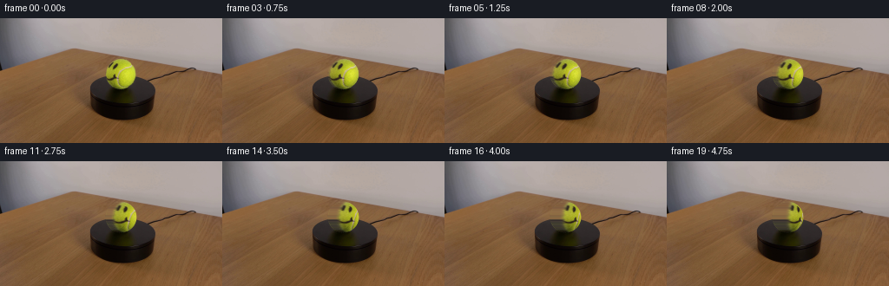
展开代码变化
--- 上一保存版本
+++ 本次保存版本
@@ -39,7 +39,7 @@
atlas[...,c] = map_coordinates(src[...,c], coords, order=3, mode='nearest').reshape(ah,aw)
# Unseen rear half gets plausible yellow felt sampled from the nearest side.
visible = Z >= 0
- edge_l = int(round(aw * 0.25)); edge_r = int(round(aw * 0.75))
+ edge_l = int(round(aw * (110.0/360.0))); edge_r = int(round(aw * (250.0/360.0)))
for j in range(aw):
if not visible[ah//2,j]:
near = edge_l if j < aw//2 else edge_r
候选 04播放与检查图
候选 05播放与检查图
点击播放 · 原生 RGB 像素
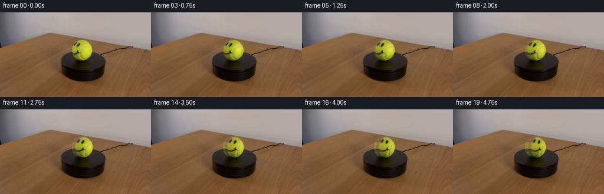
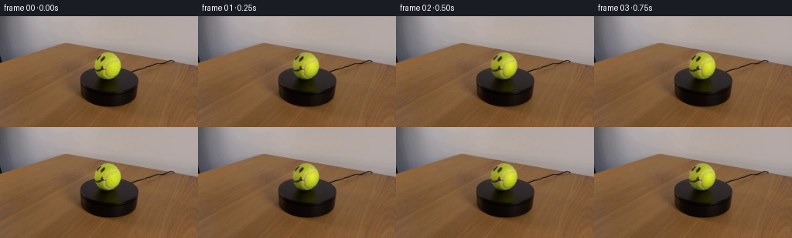
展开代码变化
--- 上一保存版本
+++ 本次保存版本
@@ -57,9 +57,9 @@
lat_screen = np.arcsin(np.clip(-yn, -1, 1))
lon_screen = np.arctan2(xn, z)
for i in range(1,20):
- # 4 degrees each frame at 4 fps = a slow 16 deg/s clockwise spin.
+ # 2.6 degrees each frame at 4 fps = a slow 10.4 deg/s clockwise spin.
# In image space, a clockwise spin moves frontal features toward the right.
- theta = np.deg2rad(4.0*i)
+ theta = np.deg2rad(2.6*i)
query_lon = (lon_screen - theta + np.pi) % (2*np.pi) - np.pi
au = ((query_lon + np.pi)/(2*np.pi)*aw) % aw
av = (np.pi/2-lat_screen)/np.pi*(ah-1)
可观测工具轨迹
实际执行的命令与返回图片。
命令 1exit 0
/bin/bash -lc 'cat GENERATION_RULES.md'
命令 2exit 0
/bin/bash -lc "cat prompt.txt && printf '\\n---FILES---\\n' && find . -maxdepth 2 -type f -printf '%p\\n' | sort"
命令 3exit 0
/bin/bash -lc "python - <<'PY'
from PIL import Image
import numpy as np
im=np.array(Image.open('first_frame.png'))
# print pixels region HSV via cv2
import cv2
hsv=cv2.cvtColor(im,cv2.COLOR_RGB2HSV)
for y in range(45,83,4):
print(y,[(x,tuple(im[y,x]),tuple(hsv[y,x])) for x in range(120,158,4)])
PY"命令 4exit 0
/bin/bash -lc "python - <<'PY'
from PIL import Image
im=Image.open('first_frame.png')
im.crop((112,37,167,91)).resize((550,540)).save('.tmp/ball.png')
PY"命令 5exit 0
/bin/bash -lc 'cat artifact_io.py'
命令 6exit 0
/bin/bash -lc "cat > generate.py <<'PY'
from pathlib import Path
import numpy as np
import cv2
from PIL import Image
import artifact_io
CASE_DIR = Path(__file__).resolve().parent
def soft_circle(h, w, cx, cy, radius, feather=1.0):
yy, xx = np.mgrid[:h, :w]
d = np.sqrt((xx-cx)**2 + (yy-cy)**2)
return np.clip((radius + feather - d) / (2*feather), 0.0, 1.0).astype(np.float32)
def generate():
source = np.asarray(Image.open(CASE_DIR / 'first_frame.png').convert('RGB'), dtype=np.uint8)
h, w = source.shape[:2]
cx, cy, radius = 139.2, 64.2, 18.25
yy, xx = np.mgrid[:h, :w]
dist = np.sqrt((xx-cx)**2 + (yy-cy)**2)
inner = dist < 16.8
# Isolate painted smile and the pale tennis-ball seam from the yellow felt.
hsv = cv2.cvtColor(source, cv2.COLOR_RGB2HSV)
H, S, V = hsv[...,0], hsv[...,1], hsv[...,2]
mark = inner & (
((V < 133) & (yy < 75)) | # face ink
((S < 108) & (yy < 80)) | # pale/grey seam
((H < 25) & (yy < 77)) | # brown-black painted edges
((H > 40) & (yy < 80)) # tiny purple seam edge
)
# Suppress false positives in the naturally dim, lower rim.
mark &= ~((yy > 74) & (V < 100))
m = (mark.astype(np.uint8) * 255)
m = cv2.dilate(m, np.ones((3,3), np.uint8), iterations=1)
m = cv2.GaussianBlur(m, (3,3), 0.55)
m = np.where(dist < 17.0, m, 0).astype(np.uint8)
# Inpainting yields the same fixed lighting and felt shading without markings.
base_bgr = cv2.inpaint(cv2.cvtColor(source, cv2.COLOR_RGB2BGR), m, 4.2, cv2.INPAINT_TELEA)
base = cv2.cvtColor(base_bgr, cv2.COLOR_BGR2RGB).astype(np.float32)
src = source.astype(np.float32)
alpha_detail = (m.astype(np.float32) / 255.0)
alpha_detail = cv2.GaussianBlur(alpha_detail, (0,0), 0.55)
# Exact residual over the repaired felt. It includes antialiased edges of the ink/seam.
residual = (src - base) * alpha_detail[...,None]
residual_alpha = alpha_detail
ball_alpha = soft_circle(h, w, cx, cy, radius-0.25, 0.8)
frames = [source.copy()]
for i in range(1, 20):
# 4 degrees per quarter-second: slow, steady clockwise rotation.
angle = 4.0 * i
M = cv2.getRotationMatrix2D((cx, cy), -angle, 1.0) # OpenCV positive is CCW visually
rd = cv2.warpAffine(residual, M, (w,h), flags=cv2.INTER_CUBIC,
borderMode=cv2.BORDER_CONSTANT, borderValue=0)
ra = cv2.warpAffine(residual_alpha, M, (w,h), flags=cv2.INTER_CUBIC,
borderMode=cv2.BORDER_CONSTANT, borderValue=0)
ra = np.clip(ra, 0, 1) * ball_alpha
# Fixed illumination, moving painted/fabric details. Residual compositing avoids
# changing the ball silhouette or the locked-off background.
rendered = base + rd
rendered = np.clip(rendered, 0, 255)
# Keep a narrow original fuzzy perimeter for natural subpixel hairs.
comp_alpha = np.clip(ball_alpha * (0.94 + 0.06*ra), 0, 1)[...,None]
out = src * (1.0-comp_alpha) + rendered * comp_alpha
frames.append(np.clip(np.rint(out), 0, 255).astype(np.uint8))
frames = np.stack(frames, axis=0)
frames[0] = source
return frames
if __name__ == '__main__':
artifact_io.save(generate(), CASE_DIR)
PY
python generate.py
python - <<'PY'
from PIL import Image
import numpy as np
# make closeup diagnostic for key frames
ims=[]
for i in [0,1,4,8,12,16,19]:
im=Image.open(f'frames/{i:02d}.png').crop((112,38,167,91)).resize((330,318))
ims.append(im)
out=Image.new('RGB',(330*len(ims),318))
for j,im in enumerate(ims):out.paste(im,(j*330,0))
out.save('.tmp/rotation_strip.png')
PY"命令 7exit 0
/bin/bash -lc "python - <<'PY'
try:
import scipy; print('scipy',scipy.__version__)
except Exception as e: print(e)
PY"命令 8exit 0
/bin/bash -lc "cat > generate.py <<'PY'
from pathlib import Path
import numpy as np
from PIL import Image
import cv2
from scipy.ndimage import map_coordinates
import artifact_io
CASE_DIR = Path(__file__).resolve().parent
def generate():
source = np.asarray(Image.open(CASE_DIR / 'first_frame.png').convert('RGB'), dtype=np.uint8)
h, w = source.shape[:2]
src = source.astype(np.float32)
# Ball geometry measured from the supplied frame. Projection is kept fixed so
# only the ball's surface rotates; camera, platform, cord and shadows do not.
cx, cy, r = 139.15, 64.0, 18.15
yy, xx = np.mgrid[:h, :w].astype(np.float32)
xn, yn = (xx-cx)/r, (yy-cy)/r
rho2 = xn*xn + yn*yn
z = np.sqrt(np.clip(1-rho2, 0, 1))
ball = rho2 <= 1.0
# Build an equirectangular surface atlas from the visible hemisphere.
# Longitude 0 points at the camera. Values behind the currently visible side
# are smoothly continued from their nearest known meridian; those areas are
# revealed gradually during the modest (76 degree) turn.
ah, aw = 192, 384
lat = np.linspace(np.pi/2, -np.pi/2, ah, dtype=np.float32)[:,None]
lon = np.linspace(-np.pi, np.pi, aw, endpoint=False, dtype=np.float32)[None,:]
X = np.sin(lon)*np.cos(lat)
Y = np.sin(lat)*np.ones_like(lon)
Z = np.cos(lon)*np.cos(lat)
sx = cx + r*X
sy = cy - r*Y
coords = np.array([sy.ravel(), sx.ravel()])
atlas = np.empty((ah,aw,3), np.float32)
for c in range(3):
atlas[...,c] = map_coordinates(src[...,c], coords, order=3, mode='nearest').reshape(ah,aw)
# Unseen rear half gets plausible yellow felt sampled from the nearest side.
visible = Z >= 0
edge_l = int(round(aw * 0.25)); edge_r = int(round(aw * 0.75))
for j in range(aw):
if not visible[ah//2,j]:
near = edge_l if j < aw//2 else edge_r
atlas[:,j,:] = atlas[:,near:near+1,:][:,0,:]
atlas = cv2.GaussianBlur(atlas, (0,0), 0.35)
# Fixed per-screen-pixel illumination from frame 0. Dividing by a low-pass
# surface estimate preserves the authentic light direction as texture turns.
smooth = cv2.GaussianBlur(src, (0,0), 4.5)
mean_col = np.array([178.,190.,42.], np.float32)
light = np.clip(smooth / mean_col, 0.55, 1.35)
feather = np.clip((1.0-np.sqrt(rho2))*r/0.85, 0, 1).astype(np.float32)
frames = [source.copy()]
lat_screen = np.arcsin(np.clip(-yn, -1, 1))
lon_screen = np.arctan2(xn, z)
for i in range(1,20):
# 4 degrees each frame at 4 fps = a slow 16 deg/s clockwise spin.
# In image space, a clockwise spin moves frontal features toward the right.
theta = np.deg2rad(4.0*i)
query_lon = (lon_screen - theta + np.pi) % (2*np.pi) - np.pi
au = ((query_lon + np.pi)/(2*np.pi)*aw) % aw
av = (np.pi/2-lat_screen)/np.pi*(ah-1)
qcoords = np.array([av.ravel(), au.ravel()])
tex = np.empty((h,w,3), np.float32)
for c in range(3):
tex[...,c] = map_coordinates(atlas[...,c], qcoords, order=3,
mode='wrap').reshape(h,w)
# Gentle lighting correction, strongest for unmarked yellow felt.
hsv = cv2.cvtColor(np.clip(tex,0,255).astype(np.uint8), cv2.COLOR_RGB2HSV)
yellow = ((hsv[...,0] > 24) & (hsv[...,0] < 42) & (hsv[...,1] > 90))[...,None]
lit = np.where(yellow, tex * (0.68 + 0.32*light), tex)
a = feather[...,None]
out = src*(1-a) + np.clip(lit,0,255)*a
frames.append(np.clip(np.rint(out),0,255).astype(np.uint8))
arr=np.stack(frames)
arr[0]=source
return arr
if __name__ == '__main__':
artifact_io.save(generate(), CASE_DIR)
PY
python generate.py
python - <<'PY'
from PIL import Image
ims=[]
for i in [0,1,4,8,12,16,19]:
im=Image.open(f'frames/{i:02d}.png').crop((112,38,167,91)).resize((330,318))
ims.append(im)
out=Image.new('RGB',(330*len(ims),318))
for j,im in enumerate(ims):out.paste(im,(j*330,0))
out.save('.tmp/rotation_strip2.png')
PY"命令 9exit 0
/bin/bash -lc "python - <<'PY'
p='generate.py'
s=open(p).read()
s=s.replace(\"edge_l = int(round(aw * 0.25)); edge_r = int(round(aw * 0.75))\", \"edge_l = int(round(aw * (110.0/360.0))); edge_r = int(round(aw * (250.0/360.0)))\")
open(p,'w').write(s)
PY
python generate.py
python - <<'PY'
from PIL import Image
ims=[]
for i in [0,1,4,8,12,16,19]:
im=Image.open(f'frames/{i:02d}.png').crop((112,38,167,91)).resize((330,318))
ims.append(im)
out=Image.new('RGB',(330*len(ims),318))
for j,im in enumerate(ims):out.paste(im,(j*330,0))
out.save('.tmp/rotation_strip3.png')
PY"命令 10exit 0
/bin/bash -lc "python - <<'PY'
p='generate.py';s=open(p).read();s=s.replace('4.0*i', '2.6*i').replace('4 degrees each frame at 4 fps = a slow 16 deg/s', '2.6 degrees each frame at 4 fps = a slow 10.4 deg/s');open(p,'w').write(s)
PY
python generate.py
python - <<'PY'
from PIL import Image
ims=[]
for i in [0,1,4,8,12,16,19]:
im=Image.open(f'frames/{i:02d}.png').crop((112,38,167,91)).resize((330,318))
ims.append(im)
out=Image.new('RGB',(330*len(ims),318))
for j,im in enumerate(ims):out.paste(im,(j*330,0))
out.save('.tmp/final_strip.png')
PY
python - <<'PY'
import numpy as np
from PIL import Image
f0=np.array(Image.open('frames/00.png')); src=np.array(Image.open('first_frame.png'))
print('shape',f0.shape,'dtype',f0.dtype,'first_equal',np.array_equal(f0,src))
z=np.load('pixels.npz')['pixels']; print('pixels',z.shape,z.dtype,'files',len(list(__import__('pathlib').Path('frames').glob('*.png'))))
PY"视觉工具实际返回图片 1
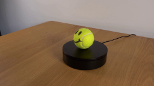
视觉工具实际返回图片 2
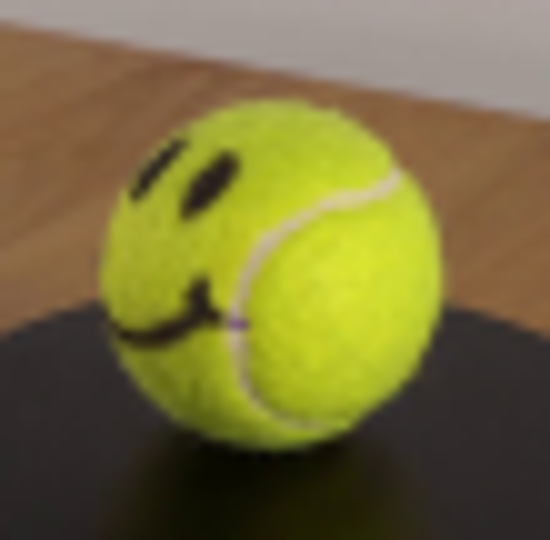
视觉工具实际返回图片 3

视觉工具实际返回图片 4
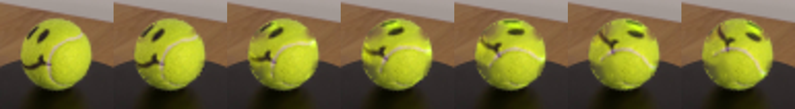
视觉工具实际返回图片 5
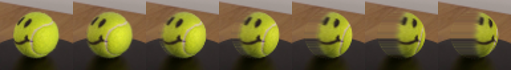
视觉工具实际返回图片 6

视觉工具实际返回图片 7
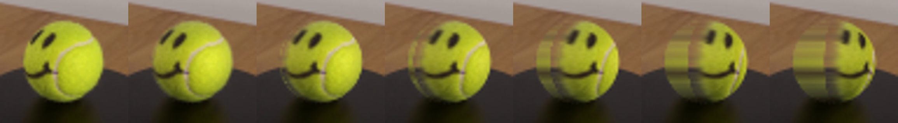
视觉工具实际返回图片 8
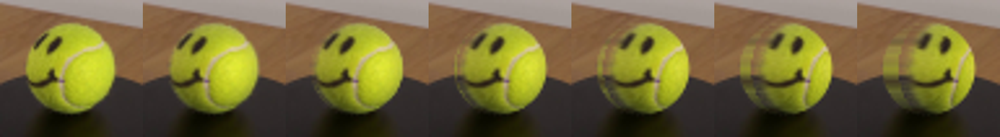
保存候选 5 份；完成命令 10 次；可验证图片返回 8 张。原始 API 响应与完整日志保留在本地。